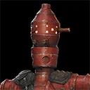
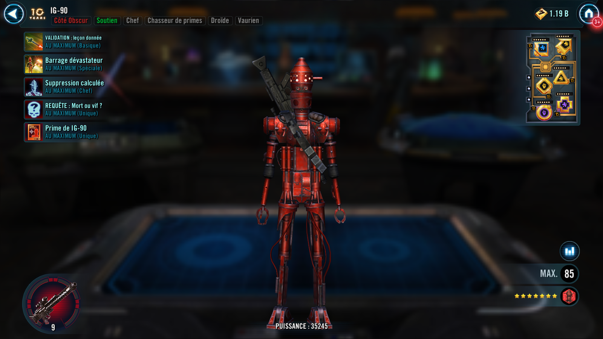
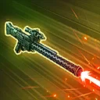
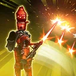

IG-90
IG-90 was an assassin droid who was hired by Darth Vader to find Doctor Aphra, Dead or Alive

IG-90 was an assassin droid who was hired by Darth Vader to find Doctor Aphra, Dead or Alive


Deal Physical damage twice to target enemy and inflict them with Defense Down for 1 turn. If the ally in the Leader slot is Doctor Aphra, grant and trigger 2 stacks of Heal Over Time to all allies, and inflict and trigger 2 stacks of Damage Over Time on the target enemy for 1 turn. If there is an active Hacked Commando Droid, it Taunts for 1 turn.

Deal Physical damage to all enemies and trigger all stacks of Damage Over Time on all enemies and Mark the target enemy for 2 turns, which can't be evaded or resisted. If the ally in the Leader slot is Doctor Aphra, call all other Dark Side Droid allies to assist and all allies recover 20% Health and Protection, and they gain Offense Up for 2 turns. IG-90 gains 40% Defense and Hacked Commando Droid Taunts for 2 turns.
At the start of battle, all Dark Side Droids and Dark Side Bounty Hunter allies gain 30% Critical Chance and Critical Damage. All Scoundrel allies gain 20% Offense and 20% Tenacity until the end of battle. When IG-90 is in the Leader slot, and not the Ally slot, the following Contract is active:
Contract: Inflict 20 debuffs on enemies. (Only Bounty Hunter allies can contribute to the Contract.)
Reward: For the rest of the battle, all Bounty Hunter allies have their Payouts activated and gain the following: while a Bounty Hunter ally is attacking, they have +5% Offense and deal bonus True damage.
At the start of battle, IG-90 has +100% counter chance and all Dark Side Droids have +50% Critical Avoidance. Whenever IG-90 is damaged, he inflicts Speed Down on a random enemy for 1 turn, and all Scoundrel allies recover 5% Health and Protection. At the start of each encounter, if Doctor Aphra has less than 50 stacks of Siphon, she gains 200% Defense. Whenever IG-90 recovers Health, inflict 3 stacks of Damage Over Time on the healthiest enemy for 1 turn (limit once per turn). Whenever the Hacked Commando Droid Taunts, he gains 100% bonus Protection until Taunt expires. If the ally in the Leader slot is Doctor Aphra;
- At the start of battle, all allies gain 100% bonus Protection and Doctor Aphra Stealths for 2 turns
- Whenever an ally critically hits an enemy, they gain Speed Up for 2 turns
- Whenever IG-90 resists a debuff, Aphra gains 5 stacks of Siphon
Whenever a Marked enemy is damaged, all Scoundrel allies and Hacked Commando Droid gain 5% Offense (stacking, max 80%) and they recover 5% Health.
Omicron Boost : While in Territory Wars: Whenever IG-90 uses a Special ability and Doctor Aphra has 200 or more stacks of Siphon, IG-90 and Doctor Aphra recover 40% Health and Protection and gain 30% Offense (stacking) until the end of encounter.
Whenever an enemy is defeated, the weakest ally gains Damage Immunity for 1 turn. Whenever IG-90 is defeated, refresh the cooldown of Doctor Aphra's abilities by 1.
Whenever an ally critically hits an enemy, dispel all buffs on the target enemy. At the start of battle, Scoundrel allies gain Critical Chance Up and Critical Damage Up for 2 turns and Bounty Hunter allies gain Speed Up and Accuracy Up for 2 turns. Whenever Doctor Aphra has more than 50 stacks of Siphon, all allies ignore Taunt effects.

Whenever IG-90 receives Rewards from a Contract or another Scoundrel ally in the Leader slots gains 50 Siphon he also gains the following Payout.
Payout: At the start of his turn, IG-90 and Hacked Commando Droid gain 40% Defense and the Hacked Commando Droid Taunts for 2 turns then grants 50 Siphon to Doctor Aphra, until the end of encounter. Bounty Hunter allies have 50% Potency and 30% Offense.